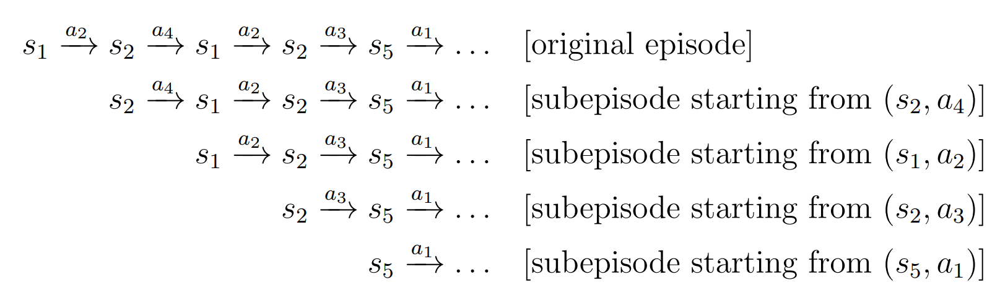
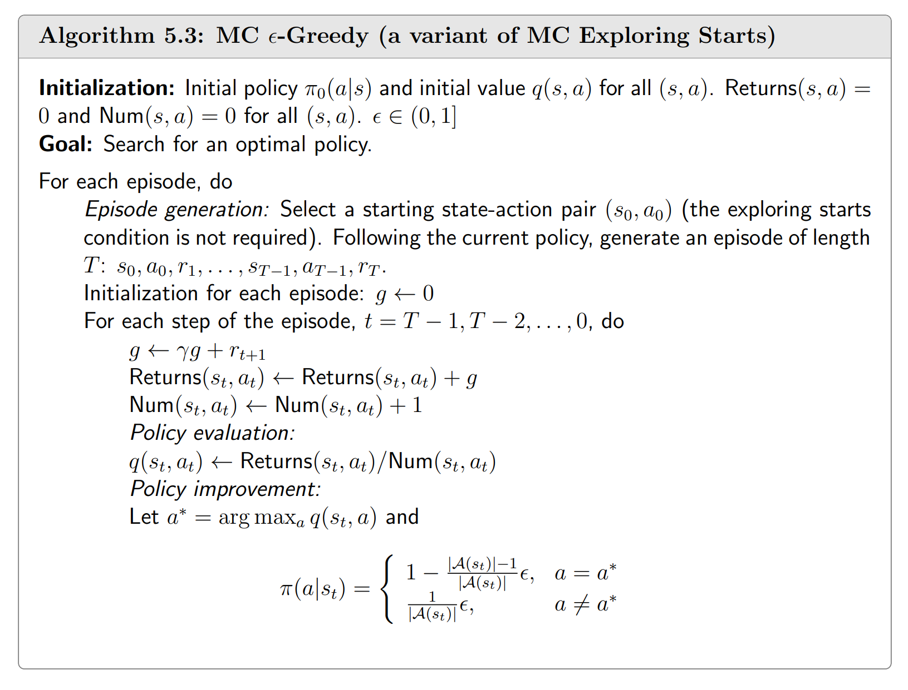

Model-Free方法指不需要知道奖励函数 $R(s,a)$ 和转移概率 $P(s' | s, a)$ 的方法。Agent 通过经验而非模型来得到最优策略。
MC方法实现了从Model-based到Model-free的飞跃。
蒙特卡洛（MC）方法
这是最朴素的Model-Free方法，基本思想是借助大数定律来用均值估计 $q_{\pi_k}(s,a)$，从而更新策略。在这里我们可以看到 exploration 和 exploitation 的思想。
要注意的是，为了充分利用一个episode，我们会把它的sub-episode一起利用起来。这就引出了 every-visit 和 first-visit 两种选择。在遍历sub-episode时，前者每当遇到一个以$(s_k,a_k)$开头的序列就利用一次，后者只利用最长的那个以$(s_k,a_k)$开头的序列。

为了在一个episode中经过所有的state-action pair，我们就不能简单地使用确定性策略，而是需要加入一定随机性。这就引出了 exploration 和 exploitation 之间的权衡。
下面是 $\epsilon$-Greedy 算法，是一个经典的权衡 exploration 和 exploitation 的算法。

从model-free开始，我们就丧失了一些严谨性了。因为我们终究不可能有充分大的数据量，从而得不到精确估计。
因此，我们要寄期望于采样，让采样得到的样本尽可能接近真实分布。